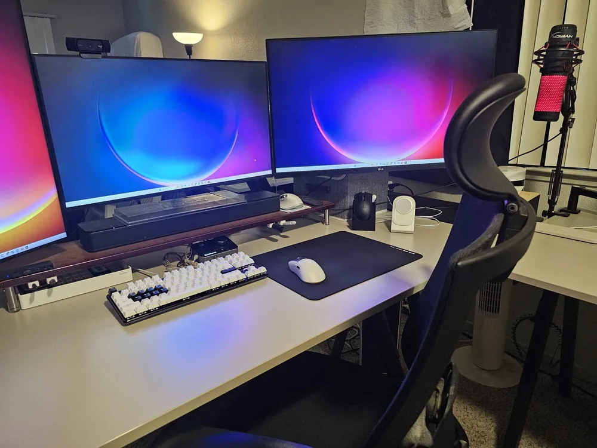

DES 157A · INTERACTIVE MEDIA · COURSEWORK
My Desk — Every Picture
A photo-driven interactive gallery inviting visitors to explore a desk setup and guess object values.

01 / PHOTO INTERACTION
Explore a familiar environment
The final version presents five desk images as selectable thumbnails and uses JavaScript to update the interaction. It developed through multiple iterations documented in the archive.

ORIGINAL MATERIALS